GRAPHICS / GPU
Lusion Systems
Custom GLSL, GPGPU dynamics, screen-space techniques, runtime profiling and mathematical geometry.
OPEN REPO ↗A computational playground for algorithms, machine learning, quantum circuits, game theory, and interfaces that behave more like environments than pages.
ENTER GITHUB ↗Custom GLSL, GPGPU dynamics, screen-space techniques, runtime profiling and mathematical geometry.
OPEN REPO ↗Readable implementations of DSA patterns plus small experiments in quant, game theory, ML and Qiskit.
OPEN LAB ↗
Numerical experiments connecting probability, simulation and quantitative finance.
Computable experiments around strategy, equilibrium and cooperation.
Qiskit circuits used to learn quantum algorithms from the circuit level up.